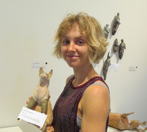

Adrienne Kenafake is a visual artist currently living in Southport on the Gold Coast, Australia. Her arts practice spans a diverse array of mediums including sculpture, textiles, collage, drawing and jewellery making.
The Australian landscape persists as a common thread that connects all her works and projects. She feels it is an infinite source of inspiration where you can witness the crossing of borders between man and nature, the blur where our world meets the wild beyond.
With an interest in found objects and recycling she creates interpretations of her immediate environment drawing on personal memories and experiences for inspiration.